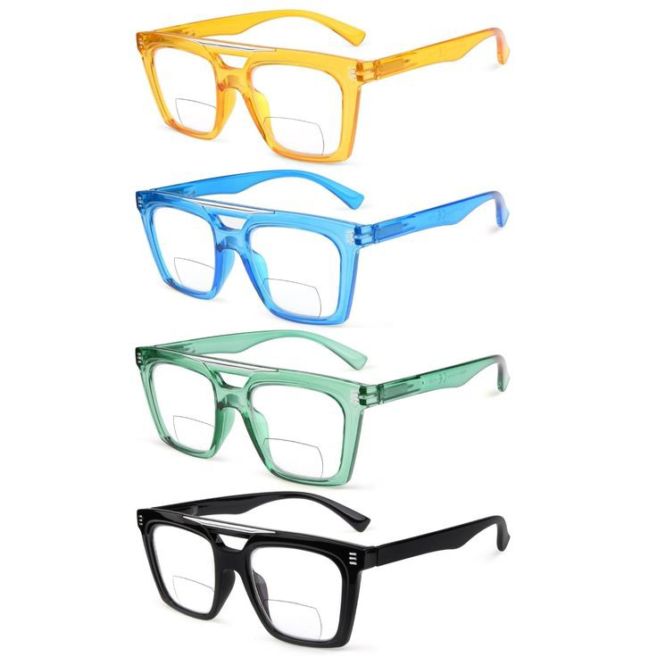
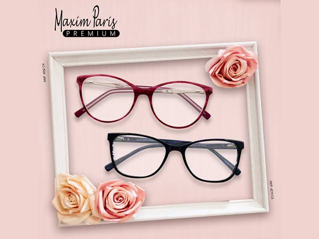
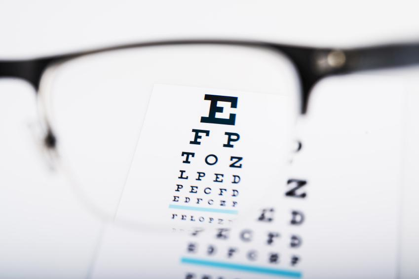
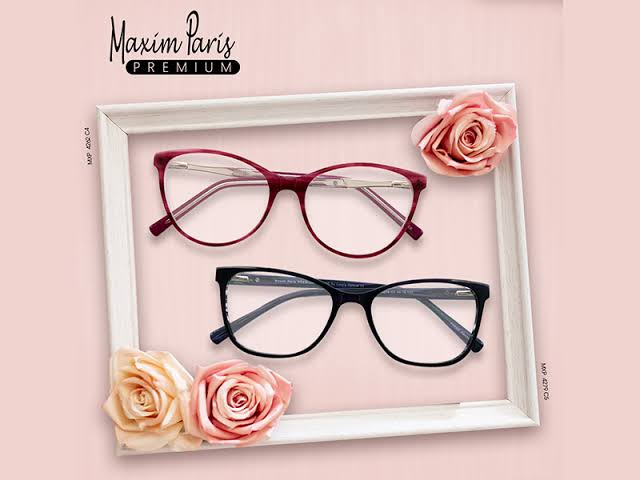
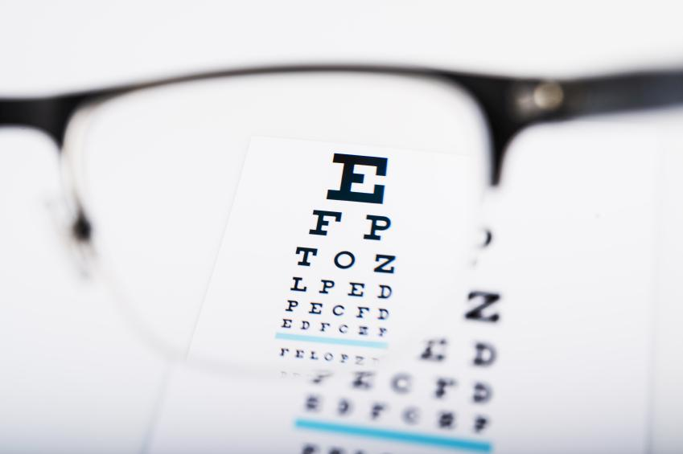

¿Que tipos de lentes son mas recomendados?
esta es una pregunta que mucha gente les hace, en este caso es importante tomar en cuenta el tratamiento que necesita la persona ya que tienen que pasar por un estudio y despues depende si necesita mas o menos graduacion o en este caso si necesite utilizar monofocales, bifocales o progresivos .
| los lentes Monofocales son el tipo de lentes que se distingen por tener la misma graduacion en toda la superficie de la mica, los cuales los hace exelentes para tratar enfermedades visuales como la miopia astigmatismo, presbicia e hipermetropia. | Los lentes Bifocales son el tipo de lentes que sus micas combinan dos graduaciones diferentes: Para mirar de lejos y para mirar de cerca, estos lentes se caracterizan por tener de manera clara y diferenciada dos areas o campos visuales: la parte superior se utiliza para ver de lejos y la parte inferior para ver de cerca | Los lentes progresivos son los lentes que tienen un incremeto continuo en el aunmento desde la parte inferior del lente, lo que te ayuda a ver claramente en todas las distancias con un solo par de lentes |
 |
 |
|
|  |
 


